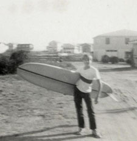
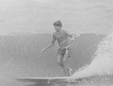
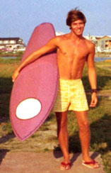

The first link goes Home . The second link is Research . The third link is Services . The fourth link is Collections . The fifth link is About . The sixth and last link is Ask a Librarian!

Phil Winter: Surfing Memoirs
My dad was from New Castle, PA and my mom was from Southport, NC. I lived the first 11 years of my life in Pennsylvania, before my Mom decided in 1962 that it was time to move back down south to Carolina Beach, NC. I wasn’t new to Carolina Beach, because we came down often to visit my Grandmother and Grandfather. As soon as we got to Carolina Beach, I spent nearly all my waking hours either in or beside the ocean. My friends and I would spend most of the day riding canvas surf mats that we would rent for the “Beach Boy special deal” of 25 cents for all day. Because we were locals, the lifeguards would allow us to go out as far as we needed to catch waves. Maybe it’s because I was small that the waves back then always seem to be big and powerful. We all got pretty good on the surf mats. We would ride in on our knees most of the time and even stand up from time to time. During the time we rode surf mats, the lifeguards had a paddle board they would use for surf rescues. A couple of the guards would even stand up on the board when they came in, which I thought was very cool. This board had to have weighed at least 100-150 pounds. It was huge. I can still remember one of my friends, Eddie Miller (“7 teens” and “Jamie” lead singer), standing up on that board. He wasn’t a lifeguard, but some how he got hold of the board and rode it in. I was stoked! Our next big thing was skim boarding and skateboarding. Our skim boards were home made out of plywood. We all made them from a design we found. Ours were round (not much of a design), unlike the pear shaped ones of today. Carolina Beach had great slanted beaches to the surf that would allow us to hurtle ourselves directly at the waves and do flips into the ocean. Our skateboards were the typical board with metal skates attached to them. The skate boards weren’t much to look at, but we were excited to be doing something new and exciting. As I was getting caught up in this early phase of surfing at Carolina Beach, I couldn’t help but go down to the beach and watch a few of the guys that actually had surfboards. The first good surfer I remember is Chuck Saunders. He was probably 5 or 6 years older than me, and I thought he was the best surfer in the world. I had to get one of these surfboards. Whenever I had the occasion to go into Wilmington with my Mom and Dad, I would get away from them and always go to Pickard's and Canady's sporting goods stores. They had surfboards, and I would spend all my time looking at and touching them. Again, I had to have one. I believe it was Christmas of 1964 when I got my first surfboard. I had actually seen my Dad try to sneak it into the neighbor’s house on Christmas eve. Even though I knew I was getting a surfboard, I couldn’t sleep that night in anticipation of getting it the next morning. I even crawled out to the living room to look under the Christmas tree, to make sure Dad had put it there. The next morning, there was the most beautiful thing I had ever seen, my 9’ 4” Green Malibu with white competition stripes down the middle. Yes, life was great!!!! Now that I had my new Malibu Surfboard, I needed to get it in the water. From the time I got it Christmas morning, I would lay it on my bed and practice paddling, standing up and walking the nose. I couldn’t wait to get it in the water. Even though it was now January, I begged my parents to let me go out at the Cove. The first relatively warm day in January, I got my wish. My parents took me to the Cove and let me take my new board into the water. Now remember, this is January and I have no wet suit. You know how excitement can sometimes get the best of you? Well it did that day, but I remember it as if it were yesterday. I didn’t stay out long. Didn’t even catch a wave, but, by gosh, I was finally surfing. |
|
That spring and summer of 1965, I don’t think I missed a day in the surf. I would paddle across the yacht basin from my house, walk to my friend’s (Johnny Stover) house located on North Carolina Beach Avenue. Johnny and his brother, Bobby, would go out with me. We took turns with my board, because they let me keep my board at their house. Many other guys began to leave their surfboards at Johnny’s house. I was getting better and better. One day I hitched a ride or walked to Stub Pier for some surfing. I remember there were a lot of guys out. It had poured down rain and the water was as slick as could be. The waves were excellent. Lank Lancaster, owner of East Coast Surfboards, was one of the guys. I didn’t know him yet, but I knew he owned a newly opened surf shop. I was a little embarrassed, because many of the guys out that day had custom made East Coast surfboards, while I had my Malibu “pop out”. There was nothing I could do at the moment, so I just kept surfing on my “pop out” as much as I could. I began to visit the East Coast Surf Shop a lot. I was what was known as a shop gremmie (beginner that hangs around). I can't remember how it came about, but after a while, Lank was either impressed with my surfing or he just wanted to get me out of his hair, so he offered me a new board for $100. From that time on, I never paid for another board. It was a 9’ 2” board with a ½” redwood stringer and a light blue competition stripe to one side of the redwood stringer. The skeg and tail block was laminated wood. |
 Phil winter with an East Coast Surfboard, 1966. Courtesy: Phil Winter |
I’m not sure how long I kept that surfboard, but I enjoyed every bit of it. The East Coast Surf Shop held a contest at stub pier to form a team. If I remember correctly, the team consisted of me, Rodney Everhart, Gary Doetsch and a couple other guys I can’t think of. We were a team in name only, because we never competed in any contests as a team. A guy from Virginia Beach joined the East Coast Surf Shop. His name was Al Roper. I believe he had shaped with Wave Riding Vehicles. He designed a shape he called a Weasel. That was my next board and it was a great one. My color design was based off a California surfer that used to surf for Harbour Surfboards, Rich Chew. It had multiple vertical stripes and one wide (12" wide) horizontal stripe about 1/3 of the way up from the bottom of the board. It was the most beautiful board I ever owned, and one of the best riding boards I ever had. |
|
That summer, 1966, was a big year for me surfing wise. I had my "Weasel" shape board and East Coast Surfboards developed a team for competition. Along with myself, the team members were (that I can remember) Mike Curry, Billy Curry, Robert Parker and Joe Funderburg. Lank sent us on a trip up the east coast to compete and drop by surf shops, so Robert could talk to surf shop owners about carrying East Coast Surfboards. I was only 15 at the time, but the youngest was Billy Curry at 13 or 14. This was about a couple week trip. Being a parent now, I would never allow my son to travel the east coast with a car load of other teenagers, but those were different times, or so I tell myself. Those years that the East Coast surf shop was up and running were some really fun times. One of the most unique characters that worked at the shop was Joe Marley. Joe did the sanding and lived at the shop for the most part. Really cool guy. Someone you really enjoyed being around. |
 |
After the East Coast surf shop closed, I started riding Dan-Pri Surfboards. Sonny Danner, half of Dan-Pri Surfboards, was an excellent surfer and an East Coast paddling champion. If you ever saw Sonny, you’d know why he was such a great paddler. He was very tall and lanky. He could really go through the water. He shaped one of my favorite boards. It was about 9’ 2” with a slight step down nose. I was probably at my peak on that board. It was during this time that I experienced the best day of surf in my life. Actually, make that the second best day. Any day surfing with my two kids is the best day surfing. Anyway, back to the “second” best day. I can’t exactly remember who I was with, but I think it was Mickey Watson, Chux Hensley and maybe Tommy Tucker, but we rode down to the Cove early one morning to check out the waves. For some reason, I was the only one that brought a board along. There were no condos or homes surrounding the Cove then. It was a very natural area and a much deeper (from the point to the beach) cove than today. Anyway, we drove up to the point on a dirt road that used to be there and when we got our first glimpse of the waves through the early morning fog, we couldn’t believe it. Waves were about 5 plus feet and breaking right at the point with the wall of the wave extending almost all the way down to were the Fort Fisher confederate marker is (rocks before the second cove). These were about as close as you could come to the perfect wave, and here I was, the only one with a board! They dropped me off and headed back to Carolina Beach to get their boards. These are one of those times in your life that remain with you forever. Whenever I have a stressful day at work, I can lean back, close my eyes and remember the wonderful serenity of having the perfect day at a beautiful place all to myself. |
|
It wasn’t long after that that shortboards began to come into existence. I moved to the short board, but I never really felt comfortable with them. Sonny Danner shaped several experimental boards for me, including a V-bottom and a tri-bottom. When Dan-Pri Surfboards went out of business, I began riding boards from Frank Sproul of Wrightsville Beach. About 1970, I was off to college, so surfing was not a year round thing for me, but I kept it up and ended up surfing for Paul Pierce and America Surfboards out of Carolina Beach. Paul made a real nice board. I remember surfing with Paul early mornings up at the jetty located on the northern extension of Carolina Beach. We caught some really nice waves. After college, I really didn't surf very much. Just mostly during summer vacations. Now I’m more up in my years, but I still love to surf. Now I ride an 8'6" classic shaped by Will Allison that suits me fine. I’ve been fortunate enough to surf in Hawaii with my children and now we surf each summer in Myrtle Beach where we have a place. On occasion we make it up to Carolina Beach, where the waves are still the best around. I wanted to list all the surfers I could remember during that time, but I know I would leave someone out, so I decided to leave that one alone, but to all those that I surfed with those many years ago, thanks for the great memories. |
 |
Page created and maintained by:Peter Fritzler, Randall Library, University of North Carolina Wilmington
First online: August 7, 2007
Last update: October 26, 2007
Citing This Page:
Winter, Phil. "Phil Winter: Surfing Memoirs." Cape Fear Surfing Archive. William Randall Library, University of North Carolina Wilmington. [Created: August 7, 2007; Updated: October 26, 2007; Cited]. Available from http://library.uncw.edu/surf/people/winterp